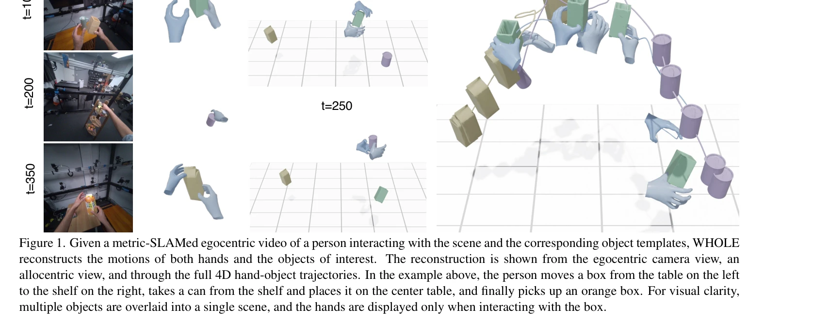

Essence

Figure 2. Reconstruction Using the Generative Motion Prior. Given a metric-SLAMed egocentric videos, and the object temp
WHOLE는 egocentric 비디오에서 손과 물체의 상호작용을 joint generative prior를 통해 world space에서 holistically 재구성하는 방법이다.
저자: Yufei Ye, Jiaman Li, Ryan Rong, C. Karen Liu | 날짜: 2026-02-25 | URL: https://arxiv.org/abs/2602.22209
Figure 2. Reconstruction Using the Generative Motion Prior. Given a metric-SLAMed egocentric videos, and the object temp
WHOLE는 egocentric 비디오에서 손과 물체의 상호작용을 joint generative prior를 통해 world space에서 holistically 재구성하는 방법이다.

Figure 1. Given a metric-SLAMed egocentric video of a person interacting with the scene and the corresponding object tem
Figure 2. Reconstruction Using the Generative Motion Prior. Given a metric-SLAMed egocentric videos, and the object temp
총평: WHOLE는 hand-object interaction을 joint generative model로 접근하는 paradigm shift를 제시하며, egocentric video에서 global 3D world frame reconstruction이라는 challenging 문제를 elegant하게 해결한 매우 우수한 연구이다.